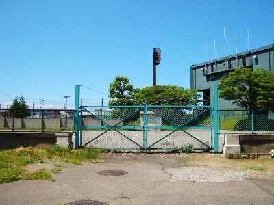
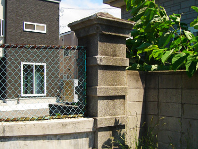

旧制・青森中学校跡地
太宰治の母校「白亜の学舎」
写真をクリックすると拡大表示します。 
{kind=link}
{kind=link}
太宰治（津島修治）が1923年～1927年の４年間、通った旧制・青森中学校。
略称は「青中(せいちゅう)」。
青中校舎があった場所は今、正門の奥は空き地、その東側(右側)は青森市営野球場となっています（写真左）。 しかし、石でできた門柱とカーブを描く腰壁だけはそのまま、太宰治が津島修治として４年間毎日見たまま、残っています（写真右）。
ここには白い外壁が特徴の2階建ての校舎が建っていました。 外壁はおそらく漆喰壁だったのだろうと推測されます。 卒業生は今、80歳以上ですが、母校のことを「白亜の学舎（まなびや）」とおっしゃいます。
校章は、数学の「無限大」の記号と中学校の「中」を合体したデザイン。正面玄関上の外壁に刻まれていました。
太宰治は自伝的小説「思ひ出」において、 「校舎は、まちの端れにあって、しろいペンキで塗られ、すぐ裏は海峽に面したひらたい公園で、 浪の音や松のざわめきが授業中にも聞こえて來て、廊下も廣く教室の天井も高くて、私はすべてにいい感じを受けたのだ」 と記しています。教師たちとのことや、授業中のことも。「思ひ出」は、虚構の少ない作品と言われています。
青中時代、成績は１年生の時から良く、4年生の時は級長だったといいます。
3年生の時には、青中の校友会誌に作品を掲載、編集委員も務めました。 同じく3年生の時、同人雑誌「蜃気楼」を友人と発行。 3年生になって「急におとなっぽくなった」といいます （金沢成蔵「勉強家の太宰」・赤坂友雄「中学生津島修治君」坪田淳「太宰の思い出」北の会編『新編 太宰治と青森のまち』）。 「思ひ出」に書かれている、旭橋を「かたかた渡りながら」来し方行く末を考え、 「作家にならう、作家にならう、と私はひそかに願望」した時期です。
戦後、旧制・青森中学校は旧制・青森高等女学校と統合、青森県立青森高校となりました。
略称は青高（せいこう）。校章は「無限大」の記号と、「高」を合体したデザイン。青高の校歌には「伝統の白亜の学舎」 という歌詞があり、歌詞の終わりは「無限の象徴(しるし)」です。
青中の太宰治の４年後輩である著名な版画家・関野凖一郎は次にように記しています （「青森中学校時代の太宰治(抄)」北の会編『新編 太宰治と青森のまち』）。
「彼の一生を考えると『思ひ出』の青森中学時代が最も明るく、 秀才で希望に満ちていた・・彼の芸術の双葉が土壌から芽を出し始め、太陽を体一杯に受けた感じである」
散歩してはいかかでしょうか？このスポットは次の散歩コースに組み込まれてます。青中校舎があった場所は今、正門の奥は空き地、その東側(右側)は青森市営野球場となっています（写真左）。 しかし、石でできた門柱とカーブを描く腰壁だけはそのまま、太宰治が津島修治として４年間毎日見たまま、残っています（写真右）。
ここには白い外壁が特徴の2階建ての校舎が建っていました。 外壁はおそらく漆喰壁だったのだろうと推測されます。 卒業生は今、80歳以上ですが、母校のことを「白亜の学舎（まなびや）」とおっしゃいます。
校章は、数学の「無限大」の記号と中学校の「中」を合体したデザイン。正面玄関上の外壁に刻まれていました。
太宰治は自伝的小説「思ひ出」において、 「校舎は、まちの端れにあって、しろいペンキで塗られ、すぐ裏は海峽に面したひらたい公園で、 浪の音や松のざわめきが授業中にも聞こえて來て、廊下も廣く教室の天井も高くて、私はすべてにいい感じを受けたのだ」 と記しています。教師たちとのことや、授業中のことも。「思ひ出」は、虚構の少ない作品と言われています。
青中時代、成績は１年生の時から良く、4年生の時は級長だったといいます。
3年生の時には、青中の校友会誌に作品を掲載、編集委員も務めました。 同じく3年生の時、同人雑誌「蜃気楼」を友人と発行。 3年生になって「急におとなっぽくなった」といいます （金沢成蔵「勉強家の太宰」・赤坂友雄「中学生津島修治君」坪田淳「太宰の思い出」北の会編『新編 太宰治と青森のまち』）。 「思ひ出」に書かれている、旭橋を「かたかた渡りながら」来し方行く末を考え、 「作家にならう、作家にならう、と私はひそかに願望」した時期です。
戦後、旧制・青森中学校は旧制・青森高等女学校と統合、青森県立青森高校となりました。
略称は青高（せいこう）。校章は「無限大」の記号と、「高」を合体したデザイン。青高の校歌には「伝統の白亜の学舎」 という歌詞があり、歌詞の終わりは「無限の象徴(しるし)」です。
青中の太宰治の４年後輩である著名な版画家・関野凖一郎は次にように記しています （「青森中学校時代の太宰治(抄)」北の会編『新編 太宰治と青森のまち』）。
「彼の一生を考えると『思ひ出』の青森中学時代が最も明るく、 秀才で希望に満ちていた・・彼の芸術の双葉が土壌から芽を出し始め、太陽を体一杯に受けた感じである」